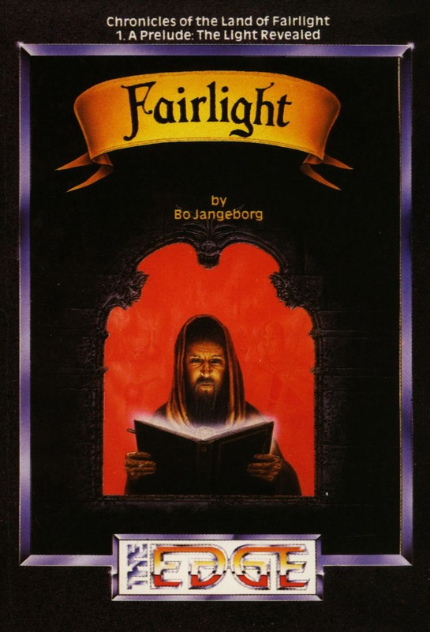
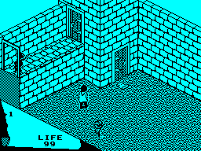
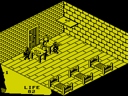

Fairlight


{kind=link}

| Publisher: | The Edge |
| Price: | £9.95 |
| Year: | 1985 |
| Source: | CRASH, Issue 22 |

The Land of Fairlight was once a happy, jolly place — but this is no longer the case. More than three thousand years have passed since the worthy King Avars held court over the land from his Castle, and the whole county is enveloped in gloom and despondency. The Light has gone from the land, and the days are perpetually grey and gloomy when once the sun shone endlessly in clear blue skies. Over the years, partly as a result of a series of weak rulers, the social fabric of Fairlight declined — the people once lived happily in a peaceful land, full of music, jollity and magic. Now the county has a feudal system; society is fragmented, overseen by merchants and barons.
Castle Avars stands alone in the middle of the plain of Avarslund, impenetrable and surrounded in rumour and myth. Folktales suggest that a perpetual summer shines within the castle; other myths tell of Segar the Immortal who dwells within the castle, awaiting the moment to return, when he’ll bring Light back to the land.

Isvar is the reluctant hero of this game, which forms the first part of the Chronicles of the Land of Fairlight and is subtitled A Prelude: The Light Revealed. Musing one day on the state of life he decides to enter Ogri’s Wood — a wood that is universally acclaimed as dangerous. Ignoring the wisdom of the Elders, (Isvar is sure they must be hiding something — perhaps a great treasure) he enters the wood and is captured by the woman-monster Ogri and carried off to her cave, unconscious.
When Isvar comes round, Ogri has departed. The figure of a old man in a hooded cloak appears before him and tells Isvar that he is now on the shelf of Ogri’s larder! Not one for being eaten, Isvar follows the old man out of the cave towards Castle Avars. Suddenly an entrance opens up in a wall that moments before was featureless. Isvar is in the castle and the old man explains that he is the court sorcerer of King Avars and has been imprisoned for thousands of years. Then the old man disappears — the figure which lured Isvar into the castle was merely an apparition, created by the imprisoned sorcerer for just that purpose. Isvar is now trapped in the castle, and can only escape by finding the Book of Light hidden within its walls and taking it to the sorcerer.

Isvar, the character you control, is moved round in a world which is not only three-dimensional in aspect, but realistic in terms of the way objects behave. Isvar has five pockets in which he can store objects he collects — but each object has a mass and obeys the laws of physics. Push a chair and it will move quite a long way; push a table and it moves less far. You can pick up and carry several pieces of food, for instance, as each is quite light but if you try to carry a barrel you will find that it is so heavy that Isvar has to drop everything else first. Objects may be called from a specified pocket, when they will be displayed on the little scroll next to the life counter, and can then be used. This scroll also acts as the display area, where messages to do with the manipulation of objects — such as ‘too heavy’ — appear. Isvar’s life force is also shown.
Isvar begins with a life force of 99 units, shown on a counter on the scroll. This counter is decremented by encounters with the trolls, guards and other nasties that patrol the castle and may be topped up by eating food or drinking wine that can be found here and there. Isvar can fight and kill some of the nasties, using his sword, but other opponents are not in the least perturbed by his efforts and are best avoided completely.
Each location in the castle is colour coded — which helps you keep your bearings while you explore. All the open air locations, for instance, are blue. As you leave one room or location, the screen will go blank for a couple of seconds while the change is made, then the new location flashes onto the screen, ready drawn. If a location is filled with other moving figures, Isvar slows down a bit — but in an empty room he can really motor! During gameplay, silence reigns, but music fans will really appreciate the two channel simulation at the start which pushes the Spectrum’s Beeper to the limit!
CRITICISM
‘Bo Jangeborg has certainly come up with an excellent new system for creating 3D representations of rooms and the objects contained in them. Playing Fairlight is a little tricky at first, owing to the number of keys that you have to master but once the initial awkwardness is overcome it’s great fun shoving things around the place and piling objects on top of one another to make ramps which Isvar can climb. Very soon you do feel as if you are playing in a real world and although the pauses between rooms are a bit annoying, the links are made very well. Overall an excellent game, with first rate graphics — worth getting hold of to play not just to look at.’
‘Wow, amazing, brill, trif, fab, awesome and other such noises... I’ve never seen a game that looks as good as this. What excellent graphics! This knocks Filmation and Filmation 2 into a cocked hat. And there’s a game behind the graphics too — what more could I ask for? Sound. There isn’t any during the game, but the intro music makes up for it. Control is awkward and takes a little getting used to, but once you get the hang of it, playing becomes second nature. The only thing that is a little infuriating is that the screen blacks out every time you change location. I strongly recommend this game to everyone: it’s very playable and addictive and it looks so good.’
‘Ultimate first introduced us to realistic 3D graphics but sadly not a lot of game was bolted on to them. Now, thanks to The Edge, that gap has been filled. Fairlight features very high quality graphics and a good tune at the start of the game. While the game is fun to play the desire to see the other screens makes you want to solve puzzles to get nearer the end effect. Controlling Isvar and manipulating objects is very easy and using a bit of brain power it’s not long before you are well and truly hooked. It’s hard to say whether Fairlight will appeal to arcade fanatics but I’m sure there are few people who could actually say the game is useless! The Edge have come up with a very good arcade adventure with 3D graphics that should rate in everybody’s top 10.’
COMMENTS
| Control keys: | Y-P up and right; H-ENTER down and left; Q-T up and left; A-G down and right; SYMBOL SHIFT/SPACE jump; B-M fight; X-V pickup; CAPS/Z drop; 1-5 select objects; 6/7 use object selected |
| Joystick: | Kempston |
| Keyboard play: | Responsive, but easier on rubber ones! |
| Use of colour: | Only black and a second colour used in each location |
| Graphics: | A stunning new technique for 3D representation |
| Sound: | Cunningly simulated two-channel music to begin with, otherwise silence |
| Skill levels: | One |
| Screens: | 80 |
| General rating: | A stunning game, achieved with a new programming technique |
| Use of computer: | 89% |
| Graphics: | 97% |
| Playability: | 90% |
| Getting started: | 86% |
| Addictive qualities: | 91% |
| Value for money: | 92% |
| Overall: | 95% |